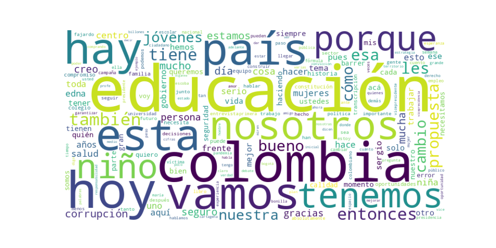

Seguidores: 4,988
ANÁLISIS DE COMUNICACIÓN POLÍTICA: CANDIDATA VICEPRESIDENCIAL COLOMBIA (Corpus de publicaciones en Instagram)
1. Perfil de Comunicación: La candidata presenta un estilo de comunicación predominantemente cercano, personal y pedagógico. Aunque ocasionalmente adopta un tono formal en columnas de opinión o declaraciones programáticas, predomina un lenguaje conversacional y accesible, que busca generar identificación. Utiliza anécdotas personales (su familia, sus abuelas, su infancia en Cartagena) y un registro cotidiano ("les cuento", "acá les comparto"), lo que humaniza su figura. Evita un lenguaje excesivamente técnico, explicando conceptos complejos (como gobernanza educativa o impuestos) de manera sencilla, lo que denota una intención didáctica y de acercamiento al ciudadano común.
2. Temas Principales: 1. Educación: Es el eje central y diferenciador de su discurso. Lo aborda de manera integral: desde la educación inicial hasta la superior, enfatizando en calidad, cobertura, financiación y conexión con el mercado laboral. Ejemplo: "La educación es el camino más poderoso a la equidad y la dignidad... vamos a lograr dar oportunidades conectadas... con el mercado laboral". 2. Corrupción: Un tema recurrente y abordado con un tono de denuncia y acción concreta. Lo enmarca como un cáncer que roba recursos destinados a servicios sociales básicos. Ejemplo: "Vamos a barrer la corrupción... esa que deja a los niños y niñas sin alimentación escolar... a la gente sin medicamentos". 3. Gobernanza y Gestión: Hace hincapié en la experiencia, la capacidad de gestión y la importancia de las instituciones y las reglas claras. Se presenta a sí misma y a su fórmula como técnicos y gestores probados. Ejemplo: "Somos expertos en gestión... la gobernanza es uno de los habilitadores que permiten que las decisiones no se fragmenten". 4. Mujeres y Equidad: Aborda la necesidad de mayor representación femenina, políticas públicas concretas y el respeto en el discurso político. Ejemplo: "Menos metáforas sobre nuestros cuerpos. Más políticas públicas que nos reconozcan como sujetas plenas de derechos". 5. Polarización / Centro Político: Rechaza constantemente los extremos y se posiciona como la opción de "centro puro", propositiva y conciliadora. Ejemplo: "Colombia necesita menos extremos y más soluciones... nunca he sido petrista ni uribista. Soy, y seguiré siendo, de centro puro".
3. Tono y Sentimiento Dominante: El tono general es propositivo, esperanzador y de firmeza serena. Combina una crítica fundamentada a los problemas del país (corrupción, deficiencias educativas) con un optimismo basado en la capacidad de gestión y la oferta de soluciones concretas. Hay un sentimiento de responsabilidad y convicción, evitando la agresividad o el tono visceral de la polarización. Transmite calma y preparación.
4. Palabras Clave de Poder: * "Cambio serio y seguro" / "CAMBIO. SERIO. SEGURO": Eslogan central que enmarca toda su propuesta, destacando responsabilidad y confiabilidad. * "Revolución educativa" / "Educación de calidad": Nuclea su principal bandera programática. * "Barrer la corrupción": Imagen potente y de acción directa para su principal promesa de combate. * "Centro" / "No a los extremos" / "Sin polarización": Define su posicionamiento político frente al escenario binario. * "Propuestas concretas" / "Experiencia en gestión": Resalta su perfil técnico y ejecutivo. * "Articular" / "Equipo": Enfatiza en la capacidad de construir consensos y trabajar colectivamente.
5. Conclusión Estratégica: La estrategia de comunicación de la candidata está cuidadosamente diseñada para construir una identidad de "antítesis de la polarización". Se dirige a un electorado cansado del conflicto binario, que valora la gestión por sobre la ideología, la educación como prioridad y la serenidad en el discurso. Busca evocar confianza, competencia y esperanza práctica (no utópica). Humaniza la política a través de lo personal y lo anecdótico, mientras se asegura de anclar esa cercanía en una sólida propuesta técnica. Su discurso apela al ciudadano que desea soluciones concretas, alejadas del ruido y la confrontación, posicionándose como la opción racional, preparada y moderada en un contexto electoral polarizado.
Candidato: Edna Bonilla (Formula Vicepresidencial con Sergio Fajardo)
El patrón de éxito se basa en una combinación de empatía concreta y propuestas técnicas. Los videos más exitosos logran transitar desde un relato emotivo y personal (poniendo "rostro" a los problemas nacionales) hacia propuestas programáticas específicas. No se quedan solo en la denuncia emocional, sino que la usan como puente para presentarse como la opción seria y capacitada para solucionarla. La fórmula es: Identificación del dolor ciudadano (con rostro y nombre) + Rechazo a la polarización y la corrupción como causas + Presentación de una alternativa "seria y segura" con pasos concretos.
Habla a un electorado urbano, moderado y con altos niveles de frustración. No es la base más radicalizada de ningún extremo, sino el votante "cansado": cansado de la polarización, de la corrupción, de la ineficacia. Es un votante que valora tanto la competencia técnica (por eso detalla propuestas) como la decencia ética (por eso enfatiza la seriedad). Incluye a jóvenes preocupados por oportunidades reales y a un sector profesional/empresarial (ej: droguistas) que busca reglas claras y Estado eficiente.
La clave fundamental del poder de su discurso es la fusión de emoción y técnica. Logra personalizar el sufrimiento nacional para generar empatía inmediata, pero inmediatamente pivota hacia un lenguaje de gestión y soluciones concretas. Esto la diferencia del discurso político tradicional, que a menudo se queda en uno u otro extremo: o pura emoción vacía (populismo) o pura técnica fría (tecnocracia). Ella ofrece "empatía aplicada". Su eslógan "cambio serio, seguro" no es solo un lema; es la promesa de un puente entre el corazón de los problemas y la cabeza de las soluciones. Su poder radica en presentarse como la traductora del dolor ciudadano en políticas públicas viables, y en hacerlo desde un lugar percibido como auténtico y fuera de los extremos que su audiencia rechaza.

Caption: ¿Quién es Edna Bonilla? Aquí les cuento un poco de mí.
Likes: 114 | Comentarios: 4 | Reproducciones: 812
Ver en InstagramCaption: Hoy conmemoramos el Día de las Víctimas. Detrás de cada historia hay rostros y vidas que merecen ser reconocidas, por eso es clave avanzar en acuerdos para cerrar el paso a la violencia.
Likes: 79 | Comentarios: 2 | Reproducciones: 651
Ver en InstagramCaption: Hoy junto a @sergiofajardovalderrama , lanzamos nuestra campaña para barrer la corrupción. Esa que deja a los niños y niñas sin alimentación escolar, la que está dejando a la gente sin medicamentos, a los jóvenes sin oportunidades. Vamos a limpiar antes de gobernar.
Likes: 110 | Comentarios: 1 | Reproducciones: 953
Ver en Instagram